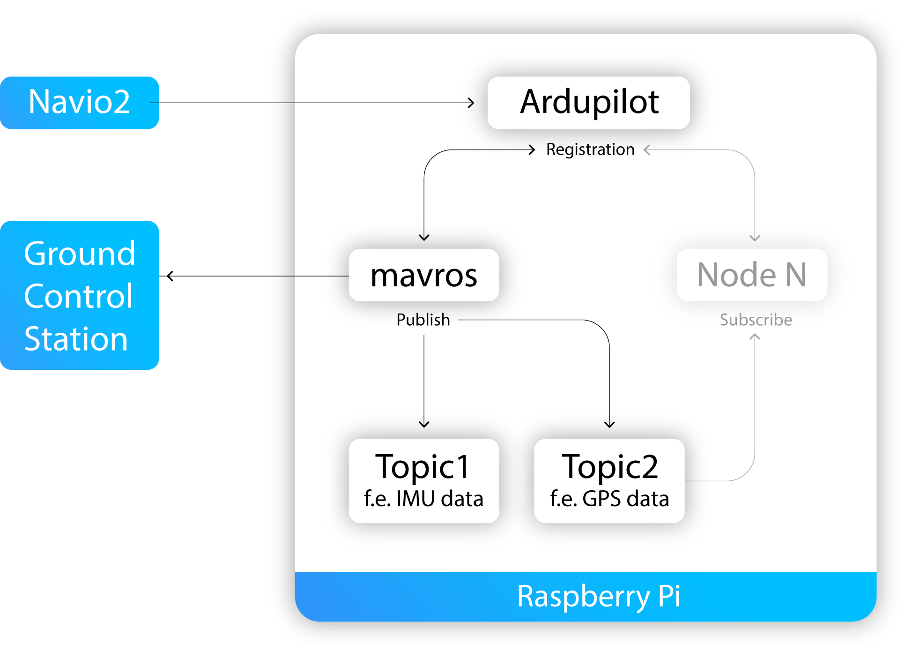

# robot operating system (ROS) ## **Design of Autonomous Systems** ### csci 6907/4907-Section 86 ### Prof. **Sibin Mohan** --- **open source middleware** framework --- **open source middleware** framework → robotics applications --- <!-- .slide: data-background="white" --> <img src="img/rtos/ros/ros.complexity.webp" width="900"> --- ## ros - develop and **scale** applications - **manages communications** --- ## ros is **middleware** Note: > Middleware is a software layer that connects the operating system to applications, data, and users. It provides common services and capabilities, like single-sign on (SSO), easy communication/coordination (like ROS) or application programming interface (API) management. Developers can rely on middleware to provide consistent, simplified integrations between application components. This frees up developers to build core features of applications, rather than spend time connecting those features to different endpoints and environments, including legacy systems. --- at a high level, ROS provides, - **separation** of code blocks → into reusable blocks --- at a high level, ROS provides, - **separation** of code blocks → into reusable blocks - **tools** → easy communication between sub-programs --- at a high level, ROS provides, - **separation** of code blocks → into reusable blocks - **tools** → easy communication between sub-programs - **language agnostic** coding → C++/Python or mixed --- at a high level, ROS provides, - **separation** of code blocks → into reusable blocks - **tools** → easy communication between sub-programs - **language agnostic** coding → C++/Python or mixed - can still communicate with each other --- <!-- .slide: data-background="white" --> ## simple example control of a robotic arm+camera <img src="img/rtos/ros/ros.robot_camera_example.webp" width="900"> --- <!-- .slide: data-background="white" --> ## simple example to make this a **ROS program** ||| |-----|-----| |<img src="img/rtos/ros/ros.robot_camera_example.webp" width="900">|create a few subprograms: | --- <!-- .slide: data-background="white" --> ## simple example to make this a **ROS program** ||| |-----|-----| |<img src="img/rtos/ros/ros.robot_camera_example.webp" width="900">|create a few subprograms: <ol> <li>camera <scb>node</scb></li> | --- <!-- .slide: data-background="white" --> ## simple example to make this a **ROS program** ||| |-----|-----| |<img src="img/rtos/ros/ros.robot_camera_example.webp" width="900">|create a few subprograms: <ol> <li>camera <scb>node</scb></li> <li><scb>motion planning</scb></li> | --- <!-- .slide: data-background="white" --> ## simple example to make this a **ROS program** ||| |-----|-----| |<img src="img/rtos/ros/ros.robot_camera_example.webp" width="900">|create a few subprograms: <ol> <li>camera <scb>node</scb></li> <li><scb>motion planning</scb></li> <li><scb>hardware drivers</scb></li> | --- <!-- .slide: data-background="white" --> ## simple example to make this a **ROS program** ||| |-----|-----| |<img src="img/rtos/ros/ros.robot_camera_example.webp" width="900">|create a few subprograms: <ol> <li>camera <scb>node</scb></li> <li><scb>motion planning</scb></li> <li><scb>hardware drivers</scb></li> <li><scb>joystick</scb></li> </ol>| --- <!-- .slide: data-background="white" --> ## simple example to make this a **ROS program** ||| |-----|-----| |<img src="img/rtos/ros/ros.robot_camera_example.webp" width="900">|create a few subprograms: <ol> <li>camera <scb>node</scb></li> <li><scb>motion planning</scb></li> <li><scb>hardware drivers</scb></li> <li><scb>joystick</scb></li> </ol>| || **communication** → using ROS constructs| || --- ### ros components <img src="img/mermaid_figs/ros_architecture_legends.png"> <br> <img src="img/mermaid_figs/ros_architecture.png" width="800"> --- ### ros components | node - process/program → **computation** - combined together into a graph - communicate via "topics" - operate at a fine-grained scale --- ### ros components | topics - **named buses** → nodes exchange "messages" --- ### ros components | topics - **named buses** → nodes exchange "messages" - **anonymous publish/subscribe semantics** - nodes not aware of **who** they are communicating with --- ### ros components | topics - **named buses** → nodes exchange "messages" - **anonymous publish/subscribe semantics** - nodes not aware of **who** they are communicating with - nodes interested in data **subscribe** to _relevant topic_ - nodes that _generate_ data **publish** to relevant topic --- ### ros components | topics - **named buses** → nodes exchange "messages" - **anonymous publish/subscribe semantics** - nodes not aware of **who** they are communicating with - nodes interested in data **subscribe** to _relevant topic_ - nodes that _generate_ data **publish** to relevant topic - **multiple** publishers and subscribers for topic --- ### ros components | topics - **named buses** → nodes exchange "messages" - **anonymous publish/subscribe semantics** - nodes not aware of **who** they are communicating with - nodes interested in data **subscribe** to _relevant topic_ - nodes that _generate_ data **publish** to relevant topic - **multiple** publishers and subscribers for topic - topic is **strongly typed** by publisher - nodes can only receive messages with a matching type --- ### ros components | topics --- ### ros components | topics - nodes communicate → publish messages to topics - simple **text** files - simple data structure → **typed fields** --- ### ros components | topics - nodes communicate → publish messages to topics - simple **text** files - simple data structure → **typed fields** - support standard primitives (<sc>int</sc>, <sc>float</sc>, <sc>boolean</sc>) - can include arbitrarily nested <sc>structs</sc> and <sc>arrays</sc> --- ### ros components | topics - nodes communicate → publish messages to topics - simple **text** files - simple data structure → **typed fields** - support standard primitives (<sc>int</sc>, <sc>float</sc>, <sc>boolean</sc>) - can include arbitrarily nested <sc>structs</sc> and <sc>arrays</sc> - nodes can exchange → <sc>request</sc> and <sc>response</sc> messages --- simple ROS message: ```ros std_msgs/Header header uint32 seq time stamp string frame_id geometry_msgs/Point point float64 x float64 y float64 z ``` --- ### ros components | master - naming and registration services --- ### ros components | master - naming and registration services - runs parameter server → **store/retrieve parameters** Note: (http://wiki.ros.org/Parameter%20Server) → a shared, multi-variate dictionary that is accessible via network APIs, used by nodes to --- ### ros components | master - naming and registration services - runs parameter server → **store/retrieve parameters** - tracks publishers/subscribers to topics --- ### ros components | master - naming and registration services - runs parameter server → **store/retrieve parameters** - tracks publishers/subscribers to topics - individual ROS nodes → locate one another - once located → communicate **peer-to-peer** --- <!-- .slide: data-background="white" --> ### ros components | peer-to-peer example 1. two nodes → <sc>camera</sc> node and <sc>image_viewer</sc> node 2. <sc>camera</sc> notifies <sc>master</sc> → wants to publish topic, <sc>images</sc> <br> <br> <img src="img/rtos/ros/ROS_master_example_english_1.png" width="500"> --- <!-- .slide: data-background="white" --> ### ros components | peer-to-peer example 3. no one isubscribing to topic, yet → **no images sent** 4. <sc>image viewer</sc> → subscribe to <sc>images</sc> topic <br> <br> <img src="img/rtos/ros/ROS_master_example_english_2.png" width="500"> --- <!-- .slide: data-background="white" --> ### ros components | peer-to-peer example 5. topic, <sc>images</sc> has both → publisher and subscriber 6. <sc>master</sc> notifies both → of each others' existence <br> <br> <img src="img/rtos/ros/ROS_master_example_english_3.png" width="500"> --- <!-- .slide: data-background="white" --> ### ros components | peer-to-peer example 5. topic, <sc>images</sc> has both → publisher and subscriber 6. <sc>master</sc> notifies both → of each others' existence <br> <br> <img src="img/rtos/ros/ROS_master_example_english_3.png" width="500"> <br> <br> 7. both start **communicating with each other**, directly --- ### ros components | more intricate example --- ### ros components | ROS transform --- ### ros components | ROS transform - robotic system → many 3D coordinate frames - change over time - _e.g.,_ world frame, base frame, gripper frame, head frame, _etc._ --- ### ros components | ROS transform - robotic system → many 3D coordinate frames - change over time - _e.g.,_ world frame, base frame, gripper frame, head frame, _etc._ - allows user keep track of **multiple** coordinate frames over time --- ### ros components | ROS transform - robotic system → many 3D coordinate frames - change over time - _e.g.,_ world frame, base frame, gripper frame, head frame, _etc._ - allows user keep track of **multiple** coordinate frames over time - maintains relationship between coordinate frames - manages **spatial relationships** --- ### ros components | ROS transform [contd.] - **tree** structure buffered in time --- ### ros components | ROS transform [contd.] - **tree** structure buffered in time - user transform <sc>points</sc>, <sc>vectors</sc>, _etc._ - at **any** desired point in time --- ### ros components | ROS transform [contd.] - **tree** structure buffered in time - user transform <sc>points</sc>, <sc>vectors</sc>, _etc._ - at **any** desired point in time - **distributed** Note: distributed: coordinate frames of robot available to **all** ROS components on any computer in the system --- ### ros components | ROS transform [contd.] - **tree** structure buffered in time - user transform <sc>points</sc>, <sc>vectors</sc>, _etc._ - at **any** desired point in time - **distributed** - sensor fusion, motion planning, navigation --- ### ros components | ROS transform [contd.] - **tree** structure buffered in time - user transform <sc>points</sc>, <sc>vectors</sc>, _etc._ - at **any** desired point in time - **distributed** - sensor fusion, motion planning, navigation - all coordinate frames/relationships → **transform tree** --- ### ros components | transform example --- ## ros+real-time? --- ## ros+real-time? basic ROS is **not** real-time --- ## ros+real-time? - can be integrated with _some_ latency guarantees - can run on linux+<sc>PREEMPT_RT</sc> --- for better real-time → [**ROS 2**](https://roscon.ros.org/2015/presentations/RealtimeROS2.pdf) --- for better real-time → [**ROS 2**](https://roscon.ros.org/2015/presentations/RealtimeROS2.pdf) look at [online textbook](https://autonomy-course.github.io/textbook/autonomy-textbook.html#ros-and-real-time) for more resources --- so why waste all this time learning about ROS? --- ## Ros+Navio2 - Raspberry Pi_Navio2 → ROS - **fast enough** for our purposes - basic Raspbian image → installed with ROS --- ## Ros+Navio2 - communicate between Navio2 and controller Pi - _e.g.,_ collect/publish **sensor** data --- ## Ros+Navio2 - communicate between Navio2 and controller Pi - _e.g.,_ collect/publish **sensor** data  --- ## Ros+Navio2 - communicate between Navio2 and controller Pi - _e.g.,_ collect/publish **sensor** data read → [step-by-step instructions](https://docs.emlid.com/navio2/ros/)